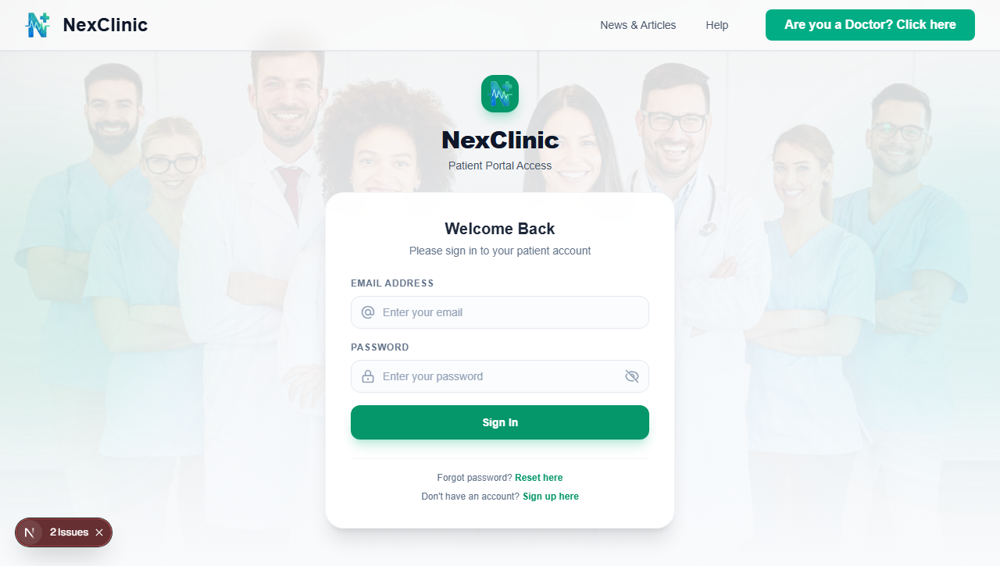
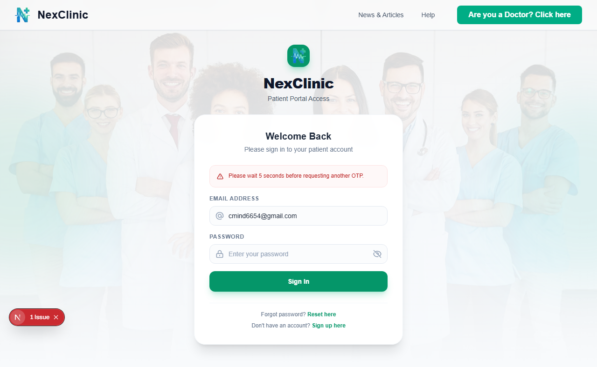

NexClinic is an enterprise-grade outpatient healthcare and practice management platform. Engineered with Django REST Framework, Next.js, and PostgreSQL, it seamlessly unifies Patients, Doctors, and Clinic Administrators into a secure, responsive digital ecosystem.

Healthcare facilities often battle fragmented schedules, telephone bottlenecks, and data silos that degrade patient satisfaction and exhaust medical staff.
Manual appointment coordination and disparate physical registries cause severe clinical overhead:
An integrated, multi-tenant outpatient operating system engineered for clinical precision:
Tailored user experiences designed to empower patients, streamline physician workflows, and give hospital administrators comprehensive oversight.
Patients search verified practitioners across hospitals by medical discipline, consultation fee, and active slot availability. The Next.js client renders dynamic cards with optimistic state updates to ensure responsive browsing.
Book, reschedule, or cancel consultation slots. State transitions update immediately in the UI with toast feedback.
Securely store and manage historical visit summaries, lab reports, and prescriptions. Strict multipart form handling protects binary files.
Engage in one-on-one consultation threads powered by Django Channels WebSockets. Stay up to date with automated healthcare news fetched dynamically via the integrated GNews API.
Define recurring weekly availability blocks across affiliated hospitals. Configure patient limits and buffer times per consultation block.
Enforce strict clinical state transitions: PENDING → ACCEPTED or REJECTED → COMPLETED or CANCELLED. Prevents invalid states and automatically notifies patients via email alerts.
Inspect patient medical history, previous clinic visits, and uploaded medical documentation prior to confirming consultations, ensuring informed clinical assessments.
Request associations with multiple clinical institutions, tracking verification statuses (PENDING, VERIFIED, REJECTED).
Hospital administrative staff review incoming medical practitioner registrations, verify professional credentials, and activate clinical booking privileges.
Manage hospital `SlotTemplates` defining operating shifts, physical clinic rooms, and room capacities.
Monitor clinic occupancy, appointment throughput, cancellation frequency, and active text consultation loads.
All clinical modifications, user authentications, and slot bookings generate structured records with actor IDs, IP metadata, and JSON state diffs for regulatory audit compliance.
Real interfaces built with Next.js App Router and Tailwind CSS, prioritizing clarity, trust, and zero cognitive load.
A single, secure login gateway serving Patients, Doctors, and Administrators. After credential validation, the system enforces email-gated 6-digit OTP verification. Tokens are delivered strictly via HttpOnly, Secure cookies to prevent XSS session hijacking.

Patients experience instant, zero-lag interface responses. When a slot is selected, the client-side state reflects the reservation immediately while a background database transaction verifies capacity using row-level locking.
Designed for strict security, high concurrency, and rapid edge response times.
Intercepts incoming browser requests, decodes HttpOnly session cookies, and enforces route boundaries before server-rendering.
Next.js 15 App Router with Tailwind CSS. Utilizes React Context and Zustand for optimistic UI mutation handling.
WSGI handles transactional REST endpoints; Daphne (ASGI) powers persistent WebSockets for live consultations.
Relational data integrity with pessimistic row-locking. Redis manages WebSocket channel layers and Celery task queues.
HTTP REST traffic (`/api/*`) is directed through standard WSGI workers for relational business operations, while WebSocket streams (`/ws/*`) route directly to ASGI Daphne servers, isolating long-lived chat connections from request pools.
Instead of calculating slot intervals on the fly, Celery Beat runs scheduled routines reading hospital `SlotTemplates` to physically stamp out rolling 14-day booking records in PostgreSQL, keeping query response times below 30ms.
The Next.js Edge proxy decrypts JWTs in memory to reject unauthorized cross-role attempts with a 307 redirect before reaching the origin Django server, dramatically decreasing server workload.
Built strictly with modern, production-proven tools ensuring performance, type-safety, and maintainability.
Healthcare platforms demand strict confidentiality and faultless operational integrity. NexClinic guarantees data security across layers.
Authentication tokens (access and refresh) are written to client browsers strictly via `Set-Cookie` with
HttpOnly, Secure, and SameSite=Lax attributes. Client-side JavaScript
cannot access the tokens, completely mitigating Cross-Site Scripting (XSS) session theft.
To prevent race conditions during peak booking periods, appointment creation uses PostgreSQL row-level locks
(select_for_update). Concurrent booking requests are queued deterministically at the database
engine level.
Role boundaries are verified twice: first at the Next.js edge router (`src/proxy.ts`), and definitively
inside Django via
granular permission classes (IsPatient, IsDoctor, IsHospitalAdmin).
Crucial clinical user journeys are continuously validated using an automated Playwright test suite spanning Desktop Chromium, Microsoft Edge, and Mobile Chrome profiles to guard against UX regressions.
Transparent separation of implemented foundational capabilities, active QA improvements, and future milestone enhancements.
The complete functional foundation connecting all three user roles with real-time operations:
Targeted enhancements planned for subsequent academic and production releases:
Undergraduate student software engineers at the Department of Computer Engineering, Faculty of Engineering, University of Peradeniya.